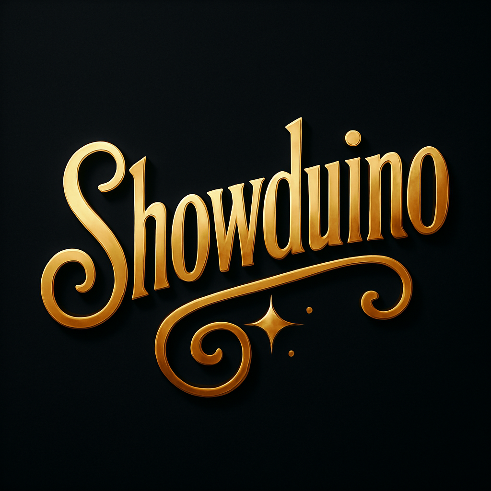
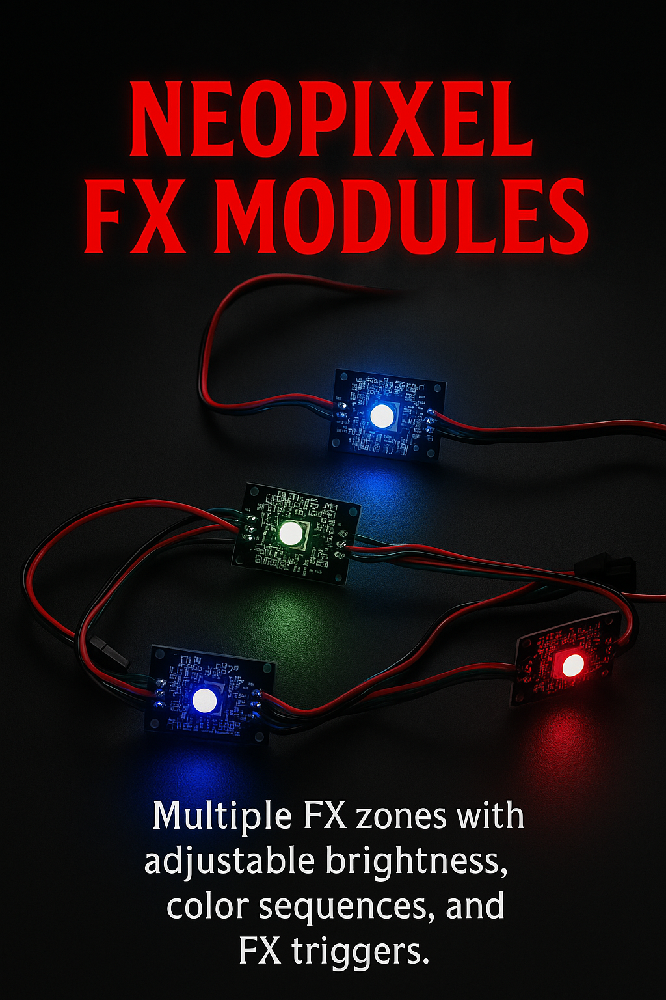
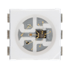

Immersive RGB Magic – From Haunt to Hero
Take full command of lighting with Showduino's NeoPixel engine. You can build intense horror atmospheres, dynamic color pulses, and thematic fades using intuitive UI controls.

The system supports visible-only pixel mapping, perfect for props like haunted lanterns or summoning tablets. Your layouts can be non-rectangular and still look perfect with the mapping engine.
